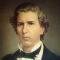
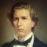

Tak C:
Jacob Gerrit Theodoor van Motman
Jacob Gerrit Theodoor werd op 19 november 1816 geboren te Wanajassa (Krawang) en stierf op 20 september 1890 te Dramaga. Hij was achtereenvolgens klerk departement van Financiën, 3e commies ter secretarie van de directie van Financiën, 2e commies en landheer van Dramaga en Djasinga. Hij trouwde op 21 augustus 1839 met Petronella Rosalia Aldonse van Swieten, geboren 20 augustus te Amsterdam en gestorven op 3 juli 1888 te Dramaga, dochter van Pieter en Susanna Gesina Frauenhoff.
Landheer van Dramaga
Jacob Gerrit Theodoor, de stamvader van deze tak, volgde zijn vader op als landheer van Dramaga. Op een later tijdstip werd Jacob ook eigenaar van het land Djasinga, dat als cultuuronderneming nog onontgonnen was. Zijn vader, Gerrit Willem Casimir, heeft Dramaga rond 1813 gekocht. Dramaga was bekend om zijn “Liberia-koffie-aanplantingen” die lange tijd tot de fraaiste en meest vruchtdragende van Java behoorden. Later werd er thee verbouwd, die ook uitstekend was totdat de plantage getroffen werd door een zwarte vliegenplaag. Tenslotte ging men over tot het planten van rubberbomen. Er is ook een tijd geweest, dat er suikerriet werd geteeld. Cateau van Kerkhoven berichtte daarover in een brief in 1867 aan haar kinderen in Holland:
“De suikerfabriek op Dramaga was allerinteressantst, een enorme inrichting met enorme machinerieën. Ook is er een rijstmolen, die echter veel eenvoudiger is en niet door stoom maar alleen door water in beweging wordt gebracht”
Het landhuis heette "Groot Dramaga”; het had wel 20 slaapkamers om logés te herbergen. Naar aanleiding van een bezoek aan het landhuis schreef genoemde Cateau:
“het huis op Dramaga is prachtig, alles wit marmer en witte muren; in de voorgalerij heeft men prachtig uitzicht op de Salak en het geheel ziet er allervrolijkst uit. Er is een groot zwembad waar het water met een enorme staal instroomt en aan de andere kant door een opening wordt afgevoerd”
Dramaga
Ten tijde van haar bezoek woonden er ook zes nichtjes van Jacob: Suze van Kakum (tak E) was net met een gouvernante uit Nederland aangekomen en de vijf dochters van Jan (tak D) woonden er al langer. Hoewel zij in 1884 als 13-jarige Dramaga voor het laatst zag, schreef kleindochter Anne Edwards in een in 1948 aan Richard P.C. gerichte brief:
“I could draw the whole groundplan and architecture of Dramaga blindfold; I remember every room so well, and every tree in the garden almost, the boengoer near the big bell, the doekoe- trees, the spice-shrubs, the nutmegs and the back, the lovely ferns and begonias all around the house in flower-pots and the horses and carriages.
The piebald horses always exited my admiration and the four ponies harnessed to a low kind of phaeton, that raced so fast along the road that the boedjang had hard work to rush their heads when necessary, and kapitein P. van der Woude of “Prins Frederik” when he came to Dramaga with us once, said he felt safer in a storm in the Bay of Biscay than in that carriage with four bolting ponies”.
Jacob en zijn echtgenote Aldonse van Swieten stonden bekend om hun grote gastvrijheid. Omdat de omstandigheden voor een bevalling op Dramaga vermoedelijk veel beter waren dan op andere ondernemingen, kwamen verscheidene kinderen van andere takken daar ter wereld.
En dan is er over hun gastvrijheid nog een verhaal van Charles Walter Kinloch, die vertelde dat zijn vrouw en hij in 1852 op een wandeling in de omgeving in Buitenzorg verdwaald waren en door een Nederlander in “Gramagah” gastvrij waren ontvangen en met paard en wagen en een fles brandy werden teruggebracht naar hun hotel Bellevue in Buitenzorg. Het is wel duidelijk wie deze Nederlander was.
Kinderen
Jacob en Aldonse hadden vijf kinderen waarvan er twee jong overleden:
• Constantijn Jacob (1848)
• Rosalie Susanne (1843)
• Pieter Reinier (1850)
Rosalie, de oudste, trouwde met de Engelsman Thomas Pryce van een welbekende familie van Britse zakenlieden, die in Batavia actief waren. Het echtpaar verliet Java in 1884.
Constantijn was de oudste zoon. Hij leeft in de herinnering voort als “Le tigre de Java”zoals zijn medestudenten aan het Polytechnicum te Zürich hem vanwege zijn lichaamskracht noemden, en als de bekende landheer van Djasinga.
Pieter , die twee jaar jonger was dan Constantijn, is de man geweest die Dramaga tot grote bloei heeft gebracht. Hij was de derde van vijf generaties die Dramaga hebben bestuurd. Het is niet bekend of hij net als Constantijn zijn opleiding in Europa heeft gehad. Het lijkt wel waarschijnlijk. Hij was een groot voorstander van wetenschappelijk onderzoek. Mede op zijn aandringen kwam botanicus Melchior Treub in 1880 naar Buitenzorg om daar leiding van ’s Lands Plantentuin op zich te nemen.
Jacob Gerrit Theodoor van Motman (1816 – 1890)
Stamvader Tak C
Klerk departement van Financiën
3e commies secretarie van de directie van Financiën
2e commies secretarie van de directie van Financiën
Landheer van Dramaga en Djasinga

 
